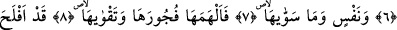

NEFSİNİ ARINDIRAN
KURTULUŞA ERMİŞTİR
Bismillâhirrahmânirrahîm
1. Güneşe ve kuşluk vaktindeki aydınlığına,
2. Güneşi takip ettiğinde aya,
3. Onu açığa çıkarttığında gündüze,
4. Onu örttüğünde geceye,
5. Gökyüzüne ve onu bina edene,
6. Yere ve onu yapıp döşeyene,
7. Nefse ve onu yaratana,
8. Ona kötülüğünü ve takvâsını ilham edene yemin ederim ki,
9. Nefsini kötülüklerden arındıran kurtuluşa ermiştir.
10. Onu kötülüklere gömen de ziyan etmiştir.
Güneşin doğup yeryüzünü ısıtmaya ve ışıklarını yaymaya başladığı andaki ışığına,
aydınlığına yemin ederim. Güneşin yükselip kuşluk vaktine eriştiği vakitteki
parlamasına ve yükselmesine yemindir. Duhâ vakti güneş ışığının parladığı (işrâk)
vakittir. “Duha” ve “Dahve” kelimeleri “ed-Dıhh” kökünden türemiştir. O ise güneşin
yeryüzüne yayılan ışığıdır ki gölgenin zıddıdır.
Bu âyette ruh güneşine, onun bedene yayılan ve nefsin üzerine parlayan ışığına yemin
edilmesine işâret vardır.
2. Güneşi takip ettiğinde aya,